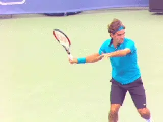
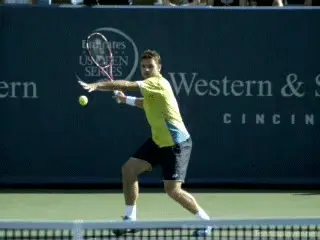
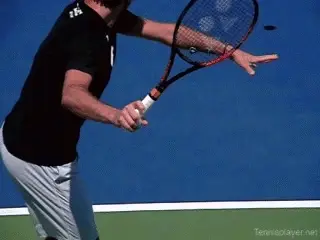
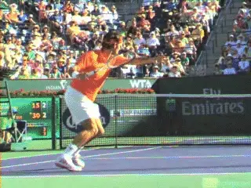
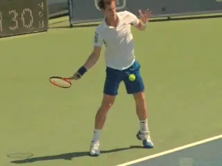
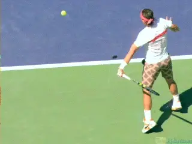
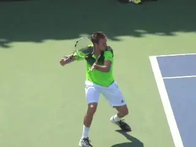
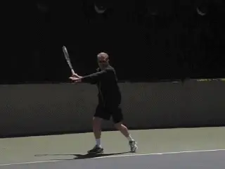

The Myth of Lag and Snap¶
John Yandell¶
In assessing the validity of "expert" explanations of tennis strokes, there are four factors to consider. There is causation. There is consequence. There is illusion. Then there is delusion.
You can see all four mixed together in the terrible instructional information that continues to flood You Tube. If you understand the amount of bad thinking in tennis, you'll question the You Tube experts who want to tell you how to grow tomatoes, fix your sink, or whatever.

Is "lag and snap" a cause, a consequence, an illusion--or a delusion?
In tennis the latest terrible example is the "lag and snap" forehand. The claim is that "lag and snap" is the magic you need for developing a pro level forehand.
The problem is lag and snap doesn't really happen in the way the so-called experts claim. And focusing on it prevents players from developing the basic components that really could give them a technically superior forehand.
So-Called
So what is this so-called "lag and snap"? [The idea that top players intentionally "lag" or delay the racket head behind the hand and the arm at the start of the forward swing.] Then they suddenly "snap" the wrist and the racket head through the contact--and this gives you world class ball speed and spin.

Players try to mechanically force what can only happen naturally and automatically.
That's the belief. Go on a tennis message board and you will find 3.0 players discussing their tortured struggles to make it happen---and their frustration that it doesn't happen---and surprise---their confusion that trying to make it happen makes their forehands worse. It can't be the concept! I must not be doing it right!
The Factors
So let's talk about those four factors: causation, consequence, illusion, and delusion. Lag and snap doesn't cause anything. The motions seen in some high speed video that have been called "lag and snap" are actually consequences.
The idea that players consciously create "lag" is an illusion. And the idea that players consciously "snap" is an actual delusion.
The reality is that good players with good forehands are trying to moderate or prevent the so-called "snap" from happening. That's right, good players are trying to inhibit the same motion some "experts" are telling lower level players they need to maximize. Furthermore, the motions described as "lag and snap" don't even happen in some good forehands, for example for players with extreme grips like Jack Sock.
The Video Shows What?

The so called lag happening as a consequence the flip.
So let's look at the hitting arm and wrist motions across a range of grip styles and then see how trying to "lag and snap" can prevent you from having the forehand you want. Then let's look at what you should actually focus on. That's way easier, and it actually works.
[It's true that for most players with some version of an eastern or a semi-western grip there is motion in the wrist at the completion of the backswing and in the forward motion to the ball. The wrist lays back and then usually flexes forward to some degree in the swing. Is this lag and snap?]
Doesn't TPA high speed video conclusively demonstrate that Roger Federer's wrist moves into a radically laid back position in the backswing? Yes!
And doesn't TPA high speed video conclusively demonstrate that Roger Federer's forehand has usually has forward wrist flexion from this laid back position on the way to contact and then more after contact? True!
So why shouldn't I believe what I can get for free on YouTube and learn to lag and snap just like Roger? Because Roger isn't doing it intentionally and these movements are the result of other movements and forces.

The wrist is laid back before during and after contact on the vast majority of forehands.
The Lag
If your wrist is relaxed at the top of the backswing it will naturally lay back as the racket moves downward and the hitting arm rotates backward. This backward rotation is called external rotation in biomechanics. It's what Rick Macci calls the "Flip." (link.)
[There is no additional delay or "lag."] The problem is lower level players can be stiff and mechanical and so this rotation doesn't happen naturally, and because of this the wrist doesn't lay back.
[These players are intent on creating "lag" so they tense up further and try to force the wrist back. Which makes everything more awkward and slows the arm and racket down impeding acceleration and extension in the swing. While they are thinking about how to "lag" and wondering if they are, the ball gets on top of them and the forward swing is short and muscled.]
Ok but what about "snap"? Didn't I say that the wrist is flexing forward? Yes. But the extensive TPA archival video clearly shows that on the vast majority of all forehands hit by world class players the wrist is still laid back to some significant degree before, during, and after contact.

The wrist actually can lay back further due to the contact.
In fact you can often see that the wrist is actually pushed back and more laid back after contact than before. Why? In conversations over the last few months, Brian Gordon gave me the biomechanical explanation why. This in turn explains the differences in the angle of the wrist and the amount of lay back at contact that you see when you study a few hundred pro forehands.
The reality, Brian's research shows, is that, depending on the specific ball, players are trying to reduce or eliminate snapping. They are actively restraining the forward motion of the wrist. Correct--the exact total opposite of the snap.
The wrist is a hinge and the force of the forward swing naturally acts on the racket head making it want to come around. Top players are restraining this to align the racket head with the shot. This a major insight that makes perfect sense when you look at the video evidence and should change the way the forehand is taught.
And sure, other factors come into play---where the player is on the court and the relationship of his position to the line incoming ball. But in general the angle of the wrist orients the racket head with the shot line at contact.

The difference in wrist angle for an inside out versus an inside in for a conservative grip.
See It!
You can see this very clearly by comparing inside out and inside in forehands. Here you have players in relatively the same spot in the court playing balls coming to them on similar angles. In the animations note the relationship between the racket head angle, the wrist, and the shot line.
To hit inside out, the wrist is slightly more laid back at contact. To hit inside in, it is slightly more flexed. Note also how this varies with grips. The more conservative grips will have more wrist layback at the start of the forward swing. The more extreme grips less.
This is true at contact as well. The conservative grips with have more lay back at contact. The extreme grips less. But in both cases you can see the differences in relation to the inside out and the inside in shot lines.
More lay back going inside out. And less layback going inside in.

The difference in wrist angle for an inside out versus an inside in for a more extreme grip.
So if you believe in lag and snap, try hitting some deep, heavy inside out forehands and see if you can snap. Video it in high speed and see what that shows you. Don't hurt your wrist.
This inhibition of the wrist flex isn't mechanical with top players. Undoubtedly it is unconscious and directed by feel and mental images. So don't think verbally about impeding the racket head by 27degrees or whatever. Imagine the alignment of the racket head and the shot.
The Final Nail?
I know true believers will likely never abandon the faith, but let's put one more nail in the coffin of lag and snap by looking at the forehand of Jack Sock. It's one of the fastest and one of the heaviest in tennis (maybe even heavier than Nadal's forehand).
But there is no lag and snap. In this case, not even the illusion. How is that? Sock has the most extreme grip in tennis---a full western with the palm fully under the handle. I mean the racket lays across his hand! There is no real support behind the racket head.

Fast and heavy and a fearsome flip and no lag and snap.
His wrist doesn't lay back in the backswing. It doesn't flex in the forward swing. So how did his forehand get so fearsome without the magic of lag and snap?
What drives it? The same factors that drive all good forehands. Coiling and uncoiling in the legs and shoulders.
Heavy rotation of his upper arm in the shoulder joint---backwards from the position with the racket head pointed at the opponent. This creates an absolutely frighteningly fearsome flip. And then this rotation continues forward through the swing in an extreme wiper.
Plus the lifting and extending from his shoulder. And the great outward extension. [But no lag and no snap. Sadly lag and snap is not the holy grail you have been waiting for.]
What is the true holy grail? Learning, mastering and executing two simple positions. The Full Turn in the preparation and then the Full Extension in the forward swing.
I like the outside backswing position developed by Brian Gordon and popularized by Rick Macci (link.) If you are fully turned with the left arm stretched and pull the racket hand forward to the ball from this position or close or close to this position---guess what?

Outside backswing, full turn, great extension---the real magic at any age or level.
You will get the flip automatically. The wrist will lay back at the start of the swing and then flex appropriately without you thinking or trying.
So don't even say the words lag and snap again. Think coil and extend. [Or actually visualize and feel coil and extend---and do that until it's all subconscious.]
[If the outside backswing is a problem for you initially just drop the hitting arm down to the double bend or straight arm position at the start of the forward swing and go from there. Then work back to the outside backswing position.]
If you want to see an entire teaching course devoted to developing this forehand and discussion of many other issues that confuse and impede player's development check out my New Teaching System. (link.) I will put it up against any online course out there. See if you agree.

John Yandell is widely acknowledged as one of the leading videographers and students of the modern game of professional tennis. His high speed filming for Advanced Tennis and TPA have provided new visual resources that have changed the way the game is studied and understood by both players and coaches. He has done personal video analysis for hundreds of high level competitive players, including Justine Henin-Hardenne, Taylor Dent and John McEnroe, among others.
In addition to his role as Editor of TPA he is the author of the critically acclaimed book Visual Tennis. The John Yandell Tennis School is located in San Francisco, California.